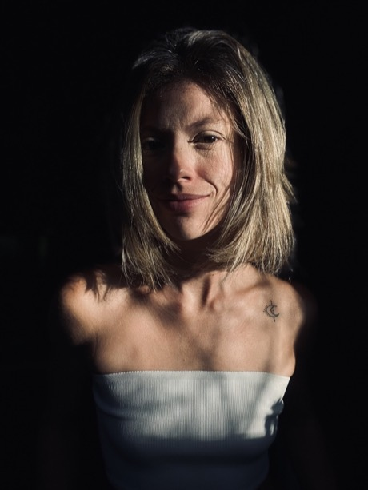
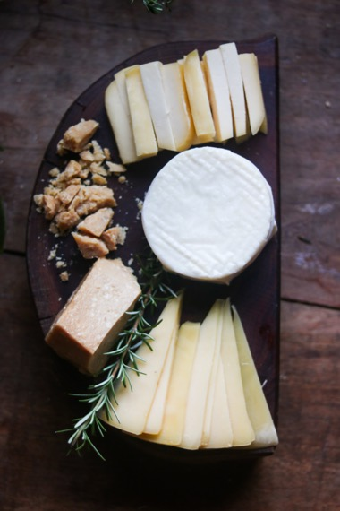
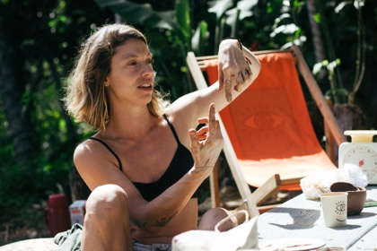
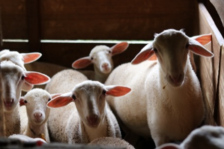
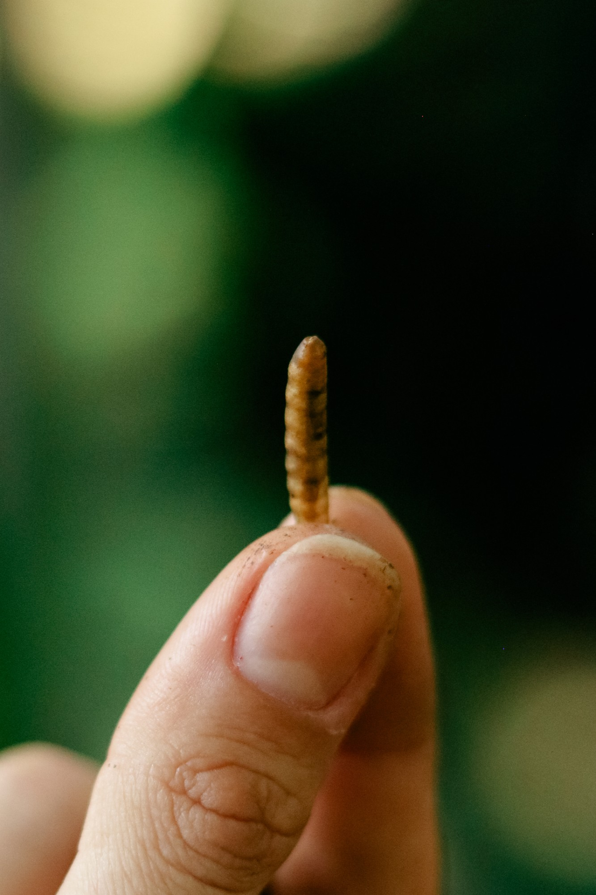

[ 02 ]
That habit
comes from
being an artist





[ 01 ]

Comida de Dragão is a dog food made from insects, from the first insect biofactory in Rio de Janeiro. No competitor to copy. No benchmark to beat. Nobody out there searching for the product. I lead the marketing.
The method is always the same. Look at the thing and say what it is actually doing — not what it was meant to do. Find the people it is already for. Build the demand, because there is none to capture. Then measure what moved.
[ 02 ]




[ 03 ]
The landing pages, the dashboards, the agents that read the numbers each morning. A decision never waits in a queue.
mock — linguagem Adcker / Emele Collab aplicada ao seu conteúdo